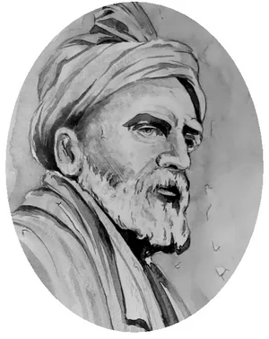
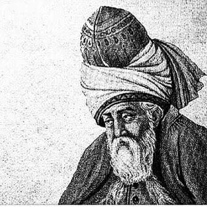

No reader of Urdu goes far without meeting Persian. For centuries it was the language of poetry, scholarship and the court from Istanbul to Delhi, and the poets I love most in Urdu wrote in its shadow: Ghalib wrote more in Persian than in Urdu, and Iqbal’s greatest works are Persian. Behind them stand five poets who shaped not only Persian literature but the imagination of half of Asia. These are my five favourites, counted down from five to one.
5. Omar Khayyam18 May 1048 – 4 December 1131
Omar Khayyam is the rare poet who was also one of the great scientists of his age. To the Persian world he was first a mathematician and astronomer; to the rest of the world, thanks to a Victorian translator, he became the poet of the passing moment.
He was born in Nishapur, in Khorasan, in 1048, and educated in the sciences of his day: mathematics, astronomy, medicine and philosophy. His treatise on algebra solved cubic equations through geometry, and under the Seljuk sultan Malik-Shah he led the team of astronomers who reformed the calendar, producing the Jalali calendar, more accurate than the Gregorian calendar that Europe adopted five centuries later. He died in Nishapur in 1131, where his tomb still stands among gardens.
His fame as a poet rests on the Rubaiyat, quatrains of four lines on time, fate, doubt and the pleasure of the present moment. How many of them he actually wrote is still debated. In 1859, Edward FitzGerald’s free English version made them a sensation in the West, and its most famous quatrain has found its way into my own poem, Gather:
The Moving Finger writes; and, having writ,
Moves on: nor all thy Piety nor Wit
Shall lure it back to cancel half a Line,
Nor all thy Tears wash out a Word of it.Edward FitzGerald’s translation, 1859
His contribution was to bring a scientist’s honesty to poetry. Khayyam refused easy answers about what comes after death, and in four short lines he could hold wonder, scepticism and joy together. For the world, he became the voice of anyone who has looked up at the stars, wondered what it all means, and decided to make the most of the evening anyway.
He is at number five because his poetic legacy is small and uncertain, and much of his fame belongs to his translator. But no poet has said more in fewer lines, and his Moving Finger has never stopped writing.
4. Saadi Shirazic. 1210 – c. 1291
Saadi is the wise teacher of Persian literature. For seven centuries, children across Iran, Afghanistan and South Asia learned to read from his books, and adults have quoted his sayings to settle arguments ever since.
He was born in Shiraz around 1210 and studied at the Nizamiyya, the great college of Baghdad. Then, as the Mongols swept across the Islamic world, he spent some thirty years travelling: through Syria, Iraq and Arabia, among scholars, merchants, kings and beggars, and, by his own account, even as a prisoner of the Crusaders. He returned to Shiraz in his fifties and, within two years, wrote the two books that made him immortal.
Bustan (The Orchard), in verse, and Gulistan (The Rose Garden), in prose sprinkled with poetry, are full of short stories and moral lessons drawn from everything he had seen. His most famous lines speak of the unity of humankind:
Bani Adam a’zaye yek digarand
Ke dar afarinesh ze yek gowharandThe children of Adam are limbs of one body,
Created from a single essence
The poem goes on to say that when one limb is in pain, the others cannot rest, and that whoever is indifferent to the suffering of others does not deserve the name of human. It is displayed at the United Nations, and the same thought echoes in Rahman Baba’s Pashto verse, written four centuries later.
His contribution was practical wisdom, humanism and wit, delivered in Persian so clear and graceful that it set the standard for prose for centuries. He is at number four because his genius is that of a teacher; the three poets above him reach heights of epic, mysticism and lyric that even Saadi did not attempt.
3. Ferdowsic. 940 – c. 1020

Ferdowsi saved a language. Three centuries after the Arab conquest of Persia, when Arabic dominated learning and literature, he spent more than thirty years writing an epic of Iran’s kings and heroes in Persian, and in doing so gave the Persian-speaking world its national memory.
He was born around 940 near Tus, in Khorasan, into a family of dehqans, the landowning gentry who preserved the old stories and traditions of pre-Islamic Iran. He drew on those stories, and on earlier prose chronicles, to begin the Shahnameh, the Book of Kings. He completed it around 1010 and presented it to Sultan Mahmud of Ghazni, who, the legend says, paid him far less than he had been promised. Ferdowsi died in Tus around 1020, poor, and is buried there in a mausoleum that is now a place of pilgrimage.
The Shahnameh runs to some 50,000 couplets, from the creation of the world to the fall of the Sasanian empire. It holds the great hero Rostam and his tragic fight with his own son Sohrab, a story still told in teahouses today. Ferdowsi knew exactly what he had achieved:
Bas ranj bordam dar in sal-e si
Ajam zende kardam bedin ParsiMuch have I suffered in these thirty years,
But I have brought the Persians back to life with this Persian
His contribution was nothing less than the survival of Persian as a language of literature, written almost entirely in its own words, and with it a shared identity for Iranians, Afghans and Tajiks. For the world, the Shahnameh stands with Homer and the Mahabharata among the great epics of humanity.
He is at number three because his achievement is monumental rather than intimate. The two poets above him speak directly to the soul, and they speak to me most.
2. Rumi30 September 1207 – 17 December 1273

Rumi is the poet of the soul’s longing for God. Eight centuries after his death, he is read and quoted from Konya to California.
Jalal al-Din Muhammad was born in 1207 in Balkh, in what is now Afghanistan. As the Mongols advanced, his family fled west and eventually settled in Konya, in Anatolia, then called Rum, which gave him the name by which the world knows him. Like his father, he became a respected scholar and teacher of Islamic law. Then, in 1244, he met the wandering dervish Shams of Tabriz, and his life was turned upside down. Their friendship transformed the jurist into a poet of ecstatic love, and when Shams disappeared a few years later, Rumi poured his grief into thousands of verses.
His Divan-e Shams-e Tabrizi gathers his lyric poetry in Shams’s name, and his Masnavi, some 25,000 couplets of stories and teachings, has been called the Quran in Persian. It begins with the lament of a reed flute, cut from its reed bed and longing to return:
Beshnow in ney chon shekayat mikonad
Az jodayiha hekayat mikonadListen to the reed, how it complains,
Telling the tale of separations
His contribution was to make the inner journey of the soul, its separation from God and its longing to return, the greatest subject of poetry. His son founded the Mevlevi order, whose whirling dervishes still turn to his music. Iqbal called him his master and made him his guide through the heavens in Javid Nama. For the world, Rumi is the poet of love in its widest sense, beyond every creed.
He is at number two because his poetry, for all its depth, often carries a lesson, while the poet at number one leaves the lesson to the reader.
1. Hafezc. 1315 – 1390
Hafez is the supreme master of the ghazal, the form that Mir and Ghalib would carry into Urdu centuries later. In Iran, almost every home has a copy of his Divan, and people still open it at random to seek guidance, a practice called fal-e Hafez.
Khwaja Shams al-Din Muhammad was born in Shiraz around 1315 and lived there almost all his life. His pen name, Hafez, means one who has memorised the Quran, which he is said to have done as a young man. He worked as a teacher and a poet at the courts of the rulers of Shiraz, through decades of shifting dynasties, wars and changing fortunes, and was by turns honoured and out of favour. He died in Shiraz in 1390, and his tomb, the Hafezieh, set in a rose garden, is visited by thousands every day.
His Divan holds some five hundred ghazals in which wine, the beloved and the tavern may be read as earthly pleasures or as symbols of divine love, and Hafez rarely tells us which. One of his most famous couplets is also one of the most extravagant promises in poetry:
Agar an Tork-e Shirazi be dast arad del-e ma ra
Be khal-e hendoyash bakhsham Samarqand o Bokhara raIf that Shirazi beauty would take my heart in hand,
For the mole on that cheek I would give Samarkand and Bukhara
His contribution was to bring the ghazal to its highest perfection: every couplet complete in itself, every image open to many meanings, and a sharp wit aimed at religious hypocrisy. Goethe was so moved by him that he wrote his West–Eastern Divan in reply, and Persian and Urdu poets have measured themselves against him for six centuries.
He is at number one for the same reason Ghalib is in my Urdu list: he leaves the question open. Hafez never settles whether his wine is of the vine or of the spirit, and in that uncertainty every reader finds room for their own life. No poet in any language has made ambiguity so beautiful.
Earlier in this series: five favourite Urdu poets, five favourite Punjabi poets and five favourite English poets. My translations of Urdu and Punjabi poetry are in Bayt al-Hikma on the Writing page.